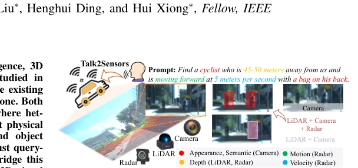
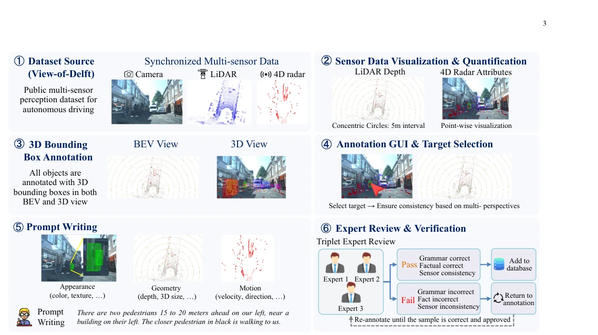
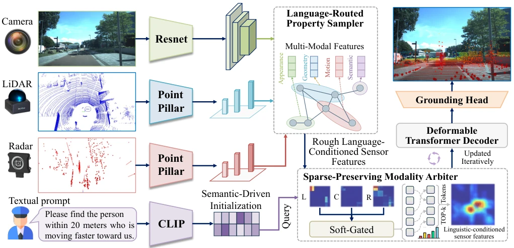
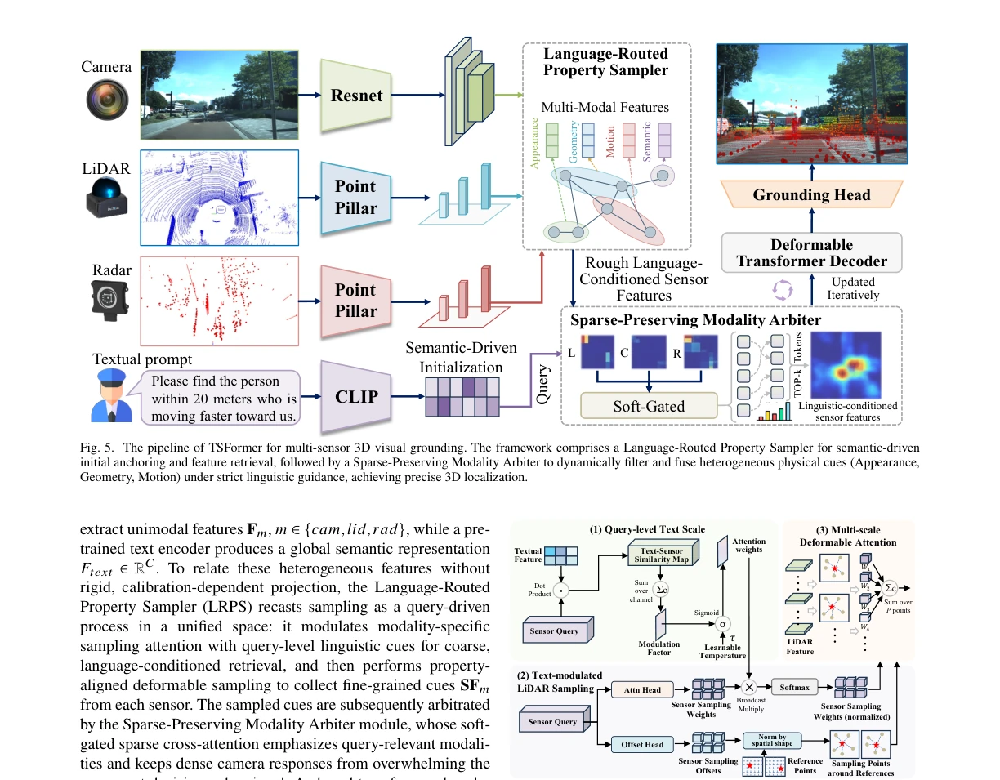
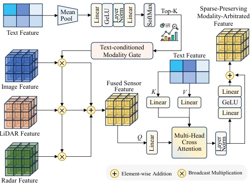
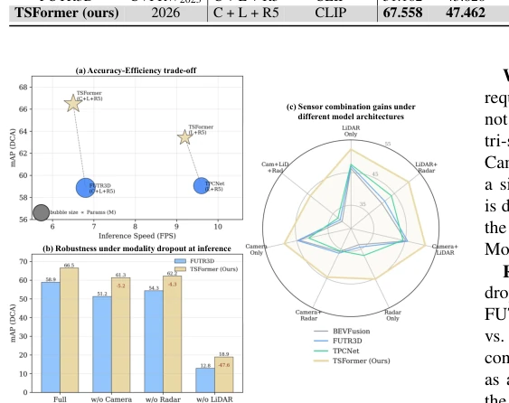
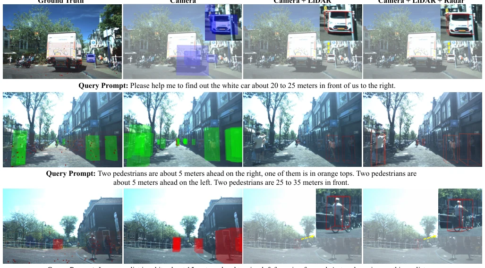
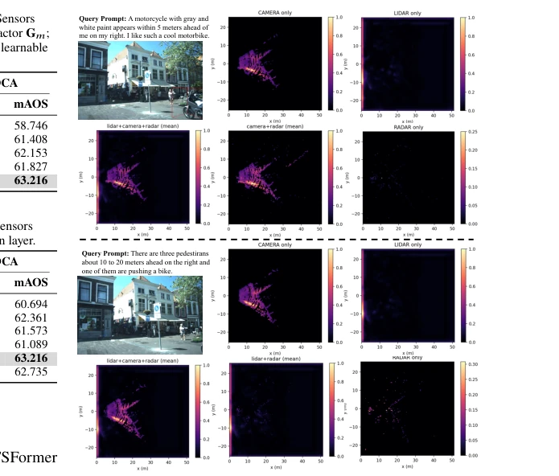
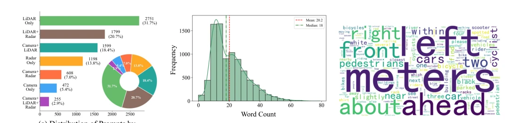
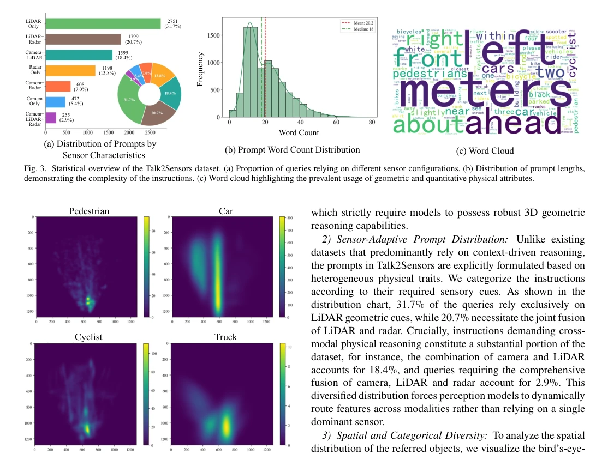

Talk2Sensors 试图用‘物理感知’来拯救自动驾驶里的 3D 视觉定位，算是给枯燥的 RGB-D 和单目方案来了剂猛药。Talk2Sensors 数据集确实填补了多传感器（相机 + 激光雷达+4D 雷达）语义对齐的空白，毕竟让机器听懂‘那个 5 米/秒向前跑的人’比‘那个穿红衣服的人’难多了。TSFormer 模型搞了个‘语言路由’采样，试图解决雷达信号稀疏被相机淹没的问题，思路挺清晰。但话说回来，8682 条指令在自动驾驶感知领域规模适中，比起大规模检测数据还是显得单薄。而且依赖三位专家审核的标注流程，数据清洗成本较高，这可不是随便谁都能复现的。另外，虽然宣称 SOTA，但在极端天气或传感器缺失下的泛化能力，光看 Table III 的 EAA 指标还不够让人信服，毕竟雷达数据在雨雾天才是真香，这里没细说。总之，是个扎实的基准，但落地应用仍有距离。
Talk2Sensors attempts to rescue 3D visual localization in autonomous driving through 'physical perception', acting as a potent remedy for the monotonous RGB-D and monocular approaches. The Talk2Sensors dataset indeed fills the void in semantic alignment for multi-sensors (camera + LiDAR + 4D radar), considering that enabling machines to comprehend 'the person running forward at 5m/s' is significantly more difficult than 'the person wearing red clothes'. The TSFormer model employs a 'language routing' sampling mechanism to address the issue of sparse radar signals being overwhelmed by camera data, with a clear conceptual approach. However, 8682 instructions represent a moderate scale in the autonomous driving perception domain, appearing somewhat sparse compared to large-scale detection datasets. Furthermore, the annotation process relying on review by three experts incurs high data cleaning costs, making it not easily reproducible by others. Additionally, although claiming SOTA performance, the generalization capability under extreme weather or sensor missing conditions is not fully convincing based solely on the EAA metric in Table III, especially since radar data proves most valuable in rain and fog, which is not elaborated here. Overall, it is a solid benchmark, yet there remains a gap before practical deployment.
Existing 3D visual localization (3DVG) research is largely confined to indoor scenes, relying on RGB-D or point clouds [5, 6, 7], while outdoor extension schemes often depend solely on monocular images [10]. This setting deviates significantly from real autonomous driving perception, as the real world requires heterogeneous sensors to capture complementary physical attributes, such as visual texture, 3D geometry, and object kinematics. Existing methods either ignore sensor characteristics or employ rigid geometric projection fusion [15, 16], causing camera features with high information density to easily overwhelm sparse yet critical radar signals. For instance, relying solely on cameras cannot perceive depth and motion velocity, making queries like 'the pedestrian moving at 2m/s 30 meters away' fundamentally infeasible [14]. Although Talk2Radar introduces radar [9], it lacks multimodal synergy. Therefore, there is an urgent need for a system capable of leveraging multi-sensor inputs and supporting semantic-driven dynamic queries of heterogeneous physical features to surpass the limits of textual referring capabilities.

Fig. 1. The overview of Talk2Sensors pipeline, regarding textual prompt-guided multi-sensor 3D visual grounding.

Fig. 2. The annotation process of our proposed Talk2Sensors dataset. Following a pipeline of quantification-annotation-verification, implicit sensor attributes are first visualized as quantifiable cues, upon which annotators label 3D boxes and write property-grounded prompts (appearance, geometry, motion); each sample is then verified by three experts for factual and multi-sensor consistency.
TSFormer adopts an end-to-end unified architecture, centered on 'language-guided physical perception'. The overall workflow is divided into two stages: coarse-grained and fine-grained. First, the Language-Routed Property Sampler (LRPS) handles coarse-grained retrieval. Instead of directly re-weighting original features, it projects text embeddings into specific sensor spaces, calculates query-level text-sensor similarity, and generates modulation factors. This factor is injected into deformable sampling attention to guide the model in extracting region features most aligned with the language description (e.g., color, geometry, speed) from cameras, LiDAR, or radar, thereby avoiding complex geometric alignment. Subsequently, the Sparse-Preserving Modality Arbiter conducts fine-grained arbitration. It predicts modality gates based on global text representations to adaptively select relevant sensors. Through soft-gated sparse cross-attention, it fuses the sampled features while preventing dense signals such as cameras from overwhelming sparse radar signals. Finally, a shared Transformer Decoder performs set prediction based on the fused features, outputting 3D bounding boxes and referring confidence. Training utilizes Hungarian matching optimization and includes auxiliary supervision loss.

Fig. 5. The pipeline of TSFormer for multi-sensor 3D visual grounding. The framework comprises a Language-Routed Property Sampler for semantic-driven initial anchoring and feature retrieval, followed by a Sparse-Preserving Modality Arbiter to dynamically filter and fuse heterogeneous physical cues (Appearance, Geometry, Motion) under strict linguistic guidance, achieving precise 3D localization.

Fig. 6. The structure of Language-Routed Property Sampler (LRPS). By inject- ing global text embeddings to initialize object queries and modulate deformable sampling offsets, LRPS efficiently extracts property-aligned preliminary features from multi-modal sensor maps.

Fig. 7. The structure of the Sparse-Preserving Modality Arbiter. A text- conditioned gate fuses the sampled sensor features while preventing dense modalities from overwhelming sparse but critical signals, and a text-guided cross-attention (fused feature as query, text tokens as keys/values) refines the result into FSPMA.
Experiments are conducted on Talk2Sensors and Mono3DRefer. Talk2Sensors comprises 8682 instructions and 20558 objects, covering cameras, LiDAR, and 4D radar. Evaluation metrics include mAP and mAOS, categorized into EAA and DCA regions. TSFormer achieves SOTA performance across all sensor configurations, showing an 8.05 mAP improvement over the strongest baseline on Talk2Sensors. Transfer performance on Mono3DRefer is also strong, with Acc@0.5 reaching 53.05%. Ablation studies verify that LRPS outperforms MAFS and DETR3D samplers, and Arbiter outperforms Sum and Concat-MLP fusion. Visualizations demonstrate that TSFormer can dynamically route features based on prompts; for instance, when querying relying solely on radar, the camera heatmap shows no response, validating the effectiveness of physical attribute perception.

Fig. 8. The comparison regarding efficiency, robustness and sensor combination gains. (a) Accuracy-Efficiency trade-off; (b) Robustness under modality dropout at inference; (c) Sensor combination gains under different model architectures.

Fig. 9. Qualitative grounding results of TSFormer under progressively enriched sensor configurations (Camera →Camera+LiDAR →Camera+LiDAR+Radar).

Fig. 10. Heatmap visualization by various sensor configurations. For certain properties perceptible only through vision (such as color), the heatmaps from LiDAR and radar show nearly no indication, confirming the property-aware ability.
其他图片Other Figures

Fig. 3. Statistical overview of the Talk2Sensors dataset. (a) Proportion of queries relying on different sensor configurations. (b) Distribution of prompt lengths, demonstrating the complexity of the instructions. (c) Word cloud highlighting the prevalent usage of geometric and quantitative physical attributes.

Fig. 4. Spatial distribution (BEV) of referred objects in Talk2Sensors. The BEV heatmaps depict the frequency and spatial spread of Pedestrians, Cars, Cyclists, and Trucks relative to the ego-vehicle, showcasing the spatial diversity and complexity of the dataset.